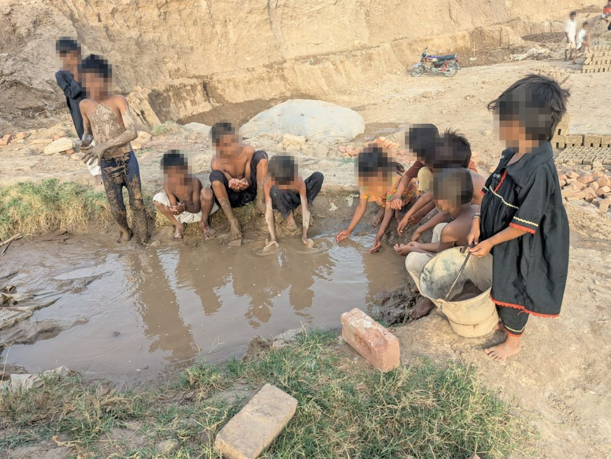

At the beginning of 2026, God placed a burden on our hearts to begin a mission called Lifting Up Children. Our vision was not only to free families trapped in bonded labor at brick kilns, but also to give them hope, dignity, and the opportunity to build a better future.
By the grace of God, this mission has already transformed many lives. So far, we have worked in four brick kiln locations and have freed 25 families by paying off the debts that kept them in bondage. For these families, freedom meant more than escaping debt — it meant the opportunity to start over, provide for their children, and live without fear.
One of our greatest success stories is a father who had spent years working at a brick kiln under the burden of debt. After his family's debt was paid, he was able to secure a government job. Today, his family is financially stable, living with dignity, and enjoying a future that once seemed impossible — one of the greatest testimonies of what freedom and opportunity can accomplish.
We also provided financial support to help several families start small businesses. Some opened small shops, while others began different types of work that now provide a steady income. These opportunities have enabled them to support their families, care for their children, and build independent lives. They are no longer trapped by debt or controlled by the brick kiln owners — they are making their own decisions, supporting their children, and building a better future.
Our first mission, Lifting Up Children, has shown us that freedom is about more than paying off a debt. It is about restoring dignity, creating opportunity, and breaking the cycle of slavery for future generations.

We are currently serving ten brick kiln locations. By God's grace, we have reached four of them, but six brick kiln communities are still waiting for help. Hundreds of families remain trapped in bonded labor, hoping that someone will hear their cries and give them the opportunity to live in freedom.
These families are waiting with hope, praying that God will send compassionate people who will help pay their debts, restore their dignity, and give them the chance to begin a new life.
We believe God calls us to be His hands and feet by bringing hope to those who have been forgotten. Our prayer is that, together with faithful partners and supporters, we can continue this mission until every family has the opportunity to live in freedom.
Every family set free is another testimony of God's love. Every child given an education is another life transformed. And every debt that is paid is another chain of slavery broken for generations to come.